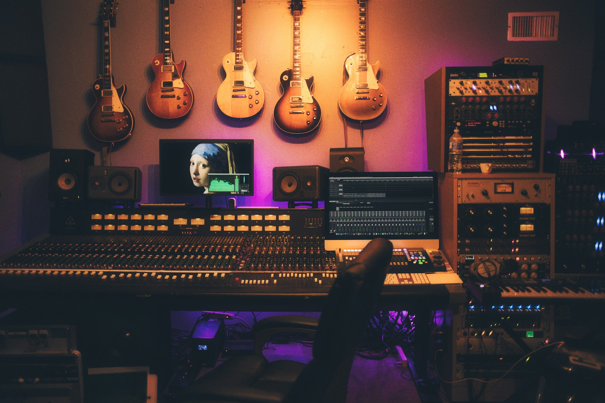
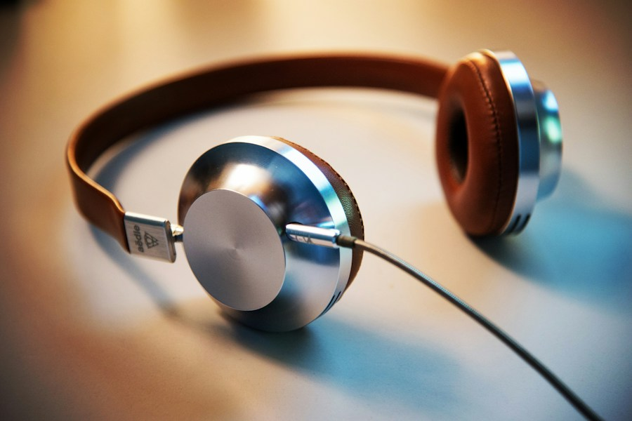

BEKAPCSOLÓDSZ?
Több mint
rádió.
A kedvenc zenéid. A te történeteid.
Egy hullámhosszon, minden nap.
89.6 Nagyvárad105.5 MargittaOnline. Bárhol.
TÖBB ZENE. TÖBB ÉLET. PLUSZ FM.↓
ÉLŐ ADÁS
Plusz FMA te zenéd. A te rádiód.
A NAPODHOZ HANGOLVA
Jó zene. Jó társaság.

A REGGEL RITMUSA06:00 — 11:00
HÉTFŐTŐL PÉNTEKIG
Reggeli Plusz
Hosszú Sándor & Szegedi Mária
Indítsuk együtt a napot!CSAK A KEDVENCEK15:00 — 19:00
HÉTFŐTŐL PÉNTEKIG
Sláger Plusz
Keserü Tamással
A hazautad is jobban szól.
HANGERŐT FEL!20:00 — 21:00
HÉTKÖZNAP ESTÉNKÉNT
Zenevonat
Egy óra, ami magával visz.
Szállj fel a ritmusra!A képek hangulatillusztrációk.
TALÁLKOZUNK AZ ÉTERBEN
Minden napra
egy kis plusz.
Ébredéshez, útközben, munka mellé.
Mi adjuk hozzá a zenét.
ÍGY SZÓL A NAPODNagyvárad
Tájékoztató műsorrend a rádió nyilvános programja alapján. A változásokat a teljes műsorrendben találod.
ITT VAGYUNK OTTHON
A zene összeköt.
Mi meg összehozunk.
Van az a dal, amit hangosabbra tekersz. Az a történet, amire felkapod a fejed. És az a hang, ami ismerősen köszön rád.
Ez a Plusz FM. Magyarul szólunk, Nagyváradon, Margittán és online — ott, ahol épp vagy.
Ismerd meg a csapatotNEKÜNK TE IS HOZZÁADSZ